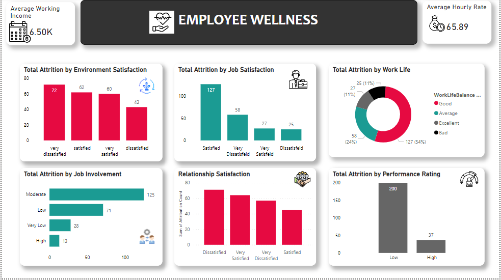
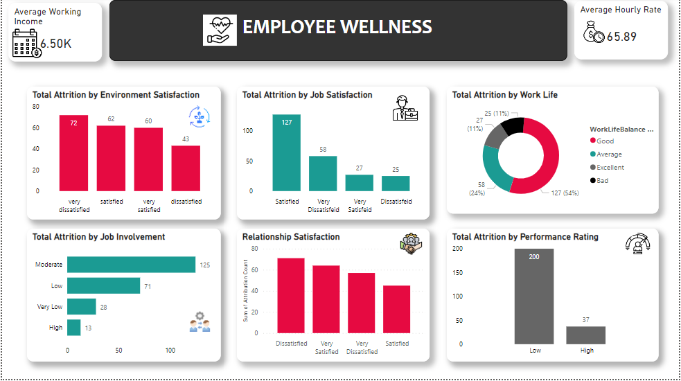

This HR analytics project focuses on leveraging data analysis techniques to enhance talent management and organizational performance. It involves data cleaning, renaming columns, removing duplicates, and handling NaN values. Additionally, it includes diverse data visualizations such as correlation maps exploring relationships between various HR factors like overtime, marital status, job role, gender, education field, department, business travel, and their impact on key metrics like age, total working years, and education level etc.
 
